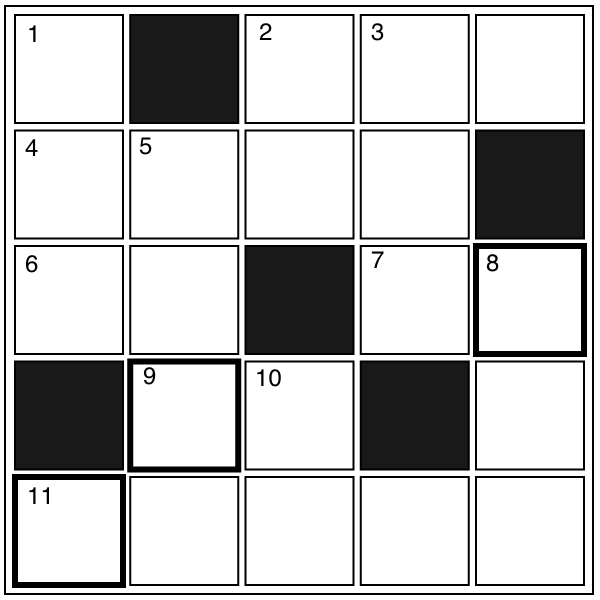

クロスワード
【→ PDF（印刷用）】

- タテのカギ
-
- １. ビジネスでは初めて会ったときに交換する。
- ２. 子どもの子ども。
- ３. 先に手続きをして使用する権利などを手に入れること。
- ５. 温度が低くてぬるいお湯。
- ８. 『バカ』の反対は？
- 10. 特定のことにとてもくわしい人。食○○。
- ヨコのカギ
-
- ２. 迷うこと。「まだ気持ちに○○○がある。」
- ４. 「ポチ」や「シロ」のいる小さな建物。
- ６. 『スープ(soup)』は、和語で？
- ７. 秋においしい木の実。
- ９. 日本人が好む木。正月の飾りにもなる。
- 11. 「普通」よりは早いが、「特急」よりは遅い。
【→ 解答を見る】